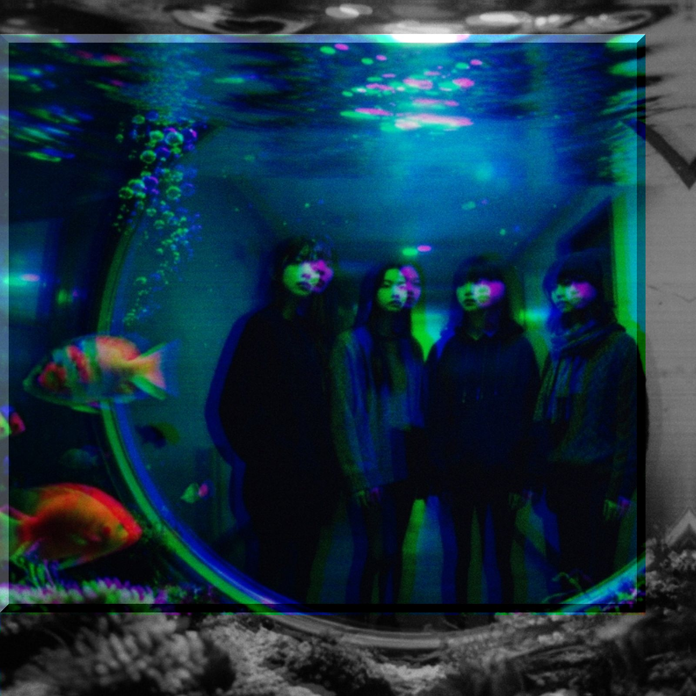

刺身/さすさす/させ刺せよ
lyrics
お刺身みたいな写真だね
素材の味しか感じない
本音ばかりで疲れたんだ
一応 加工してあるけどね
ふわふわ tik tak
チクチク tik tak
針は回る そして僕を指す
キラキラ fake dance
チクチク tik tak
針は回る そして僕を刺す
海老のテンプラ 大きく魅せて
通っぽく 塩で食べてみる
釣ったんじゃなくて 釣れたんだ
一人前の 立派な素人だね
ふわふわ tik tak
チクチク tik tak
針は回る そして僕を指す
ゆらゆら in trance
チクチク tik tak
針は回る そして僕を刺す
遠くからでも応援してます
まだ見ぬ世界の目的地
着いたんじゃなくて つかれたんだ
アタマの中でグツグツ煮込む
ふわふわ tik tak
チクチク tik tak
僕は回す そして針は指す
ぐるぐる tik tak
チクチク tik tak
針は回す そして また 目指す
建前のお寿司も悪くないね
順番なんて気にしない
本音ばっかじゃ 信じれないね
半分くらいは 優しさを
ふわふわ tik tak
チクチク tik tak
針は回る そして僕を刺す
ふわふわ tik tak
チクチク tik tak
針は回る そして また 探す
notes
タイトルなんだけど古文の活用でこんなのなかったっけ？
刺せ 刺せー! 刺す 刺せよ ってなんかコントみたいだね。
ふわふわコトバ、チクチクコトバ。要は本音と建前ってことなんだけど。あー逆か。建前と本音。この際どっちでもいいか。
刺し身みたいに何も加工しないのもある意味正しいけど、素材の力だけでゴリ押しってのも誠実じゃないし、ただ切っただけを出してんのかよっ、というのもあるよね。（ただ切っただけとは思ってませんよ、例えです。） 逆に、加工盛りまくりで釣る気満々もある意味では親切ではあると。あ、でも調理時間30分ってなってるのに、開いたら②くらいで「一晩冷蔵庫で寝かせます」とかいってるレシピ。あれはダメだー。釣られてガッカリさせちゃ親切じゃない。「明日の夕飯」って先に書いといてくれ。
まあなんでもやってみないとわからないもんで、当事者にでもならなきゃわからないことだらけ。外野のつもりでも気がつきゃ、巻き込まれてることもあるらしいからね。かと言ってほんとに刺しちゃダメだよ。CGじゃない、暴力は信じない。針は変えたんだろうな。
…いや、話がそれた。もちろん注射じゃなくてコンパスとか時計とか、いわゆる指針ってやつの話なんだけどさ。でも、そんなのもブレブレでいいのかもね。グルグル回ってれば結局は輪になっちゃうんだ。そんくらいでちょうどいいのだよ。
それよりもさ、今日の夕飯何にする？